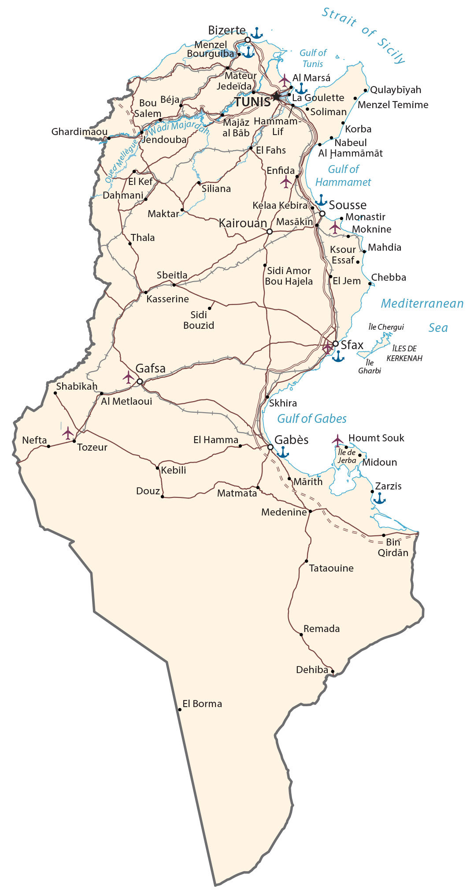

Tunisia is a country in Northern Africa, next to the Mediterranean Sea. Additionally, it contains Africa’s northernmost point at Cape Angela. Tunis is the capital and largest city of Tunisia. Other major cities are Sfax, Sousse, and Kairouan.
Tunisia borders just two countries. While Algeria is situated to the west, Libya is located to the east. Tunisia is known for its historical ruins, mosques, Mediterranean coastline beaches, Atlas Mountains, and the Sahara Desert.
Go back home